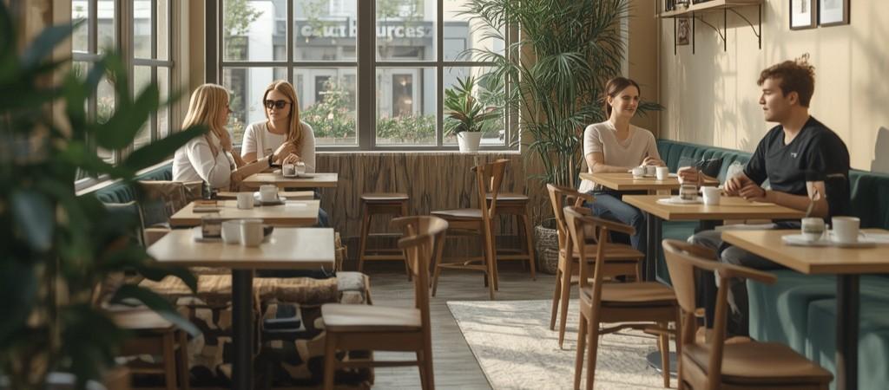

Kavárna a pražírna
Váš zdroj pro kvalitní kávu a nezapomenutelné zážitky

Váš zdroj pro kvalitní kávu a nezapomenutelné zážitky
Vítejte u nás – v místě, kde se vášeň pro kávu potkává s poctivým řemeslem. Jsme kavárna a pražírna, která vznikla z jednoduché myšlenky: nabídnout lidem kávu, která má svůj příběh. Každé zrno, které u nás najdete, pečlivě vybíráme od farmářů z celého světa a pražíme ho s důrazem na jeho jedinečný charakter.
Věříme, že dobrá káva není jen nápoj, ale zážitek, který spojuje. Proto u nás najdete nejen skvělou kávu, ale i příjemné místo pro setkávání, práci i odpočinek. Ať už jste milovník kávy, nebo teprve objevujete její svět, jste u nás vždy vítáni.